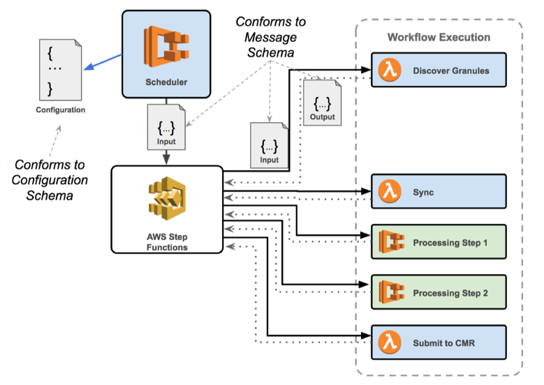

Configuration and Message Use Diagram

- Configuration - The Cumulus workflow configuration defines everything needed to describe an instance of Cumulus.
- Scheduler - This starts ingest of a collection on configured intervals.
- Input to Step Functions - The Scheduler uses the Configuration as source data to construct the input to the Workflow.
- AWS Step Functions - Run the workflows as kicked off by the scheduler or other processes.
- Input to Task - The input for each task is a JSON document that conforms to the message schema.
- Output from Task - The output of each task must conform to the message schemas as well and is used as the input for the subsequent task.